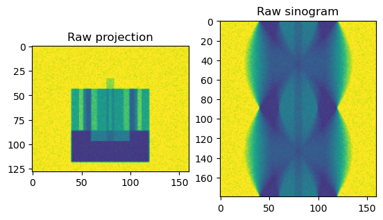
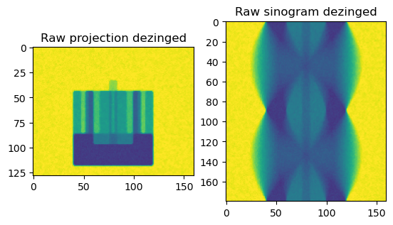
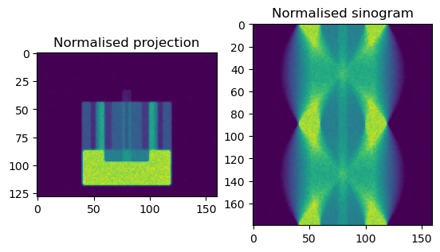
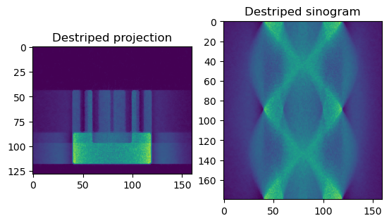
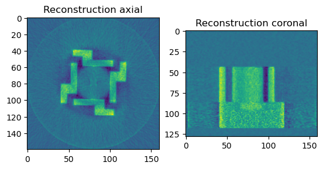

The basic CPU pipeline to process standard parallel-beam tomographic data in HTTomo:#
Load the raw data
Apply 3D dezinger filter from HTTomo
Normalise the data, take the negative log
Perform stripes removal
Find the Center of Rotation (CoR)
Reconstruct using the Gridrec algorithm
Save the result as tiffs
Note: This pipeline uses some methods from the TomoPy software
[35]:
import sys
from datetime import datetime
import os
from os import mkdir
import matplotlib.pyplot as plt
import yaml
import pprint
from mpi4py import MPI
import numpy as np
from nvtx import annotate
import multiprocessing
import tomopy
from httomo.common import PipelineTasks
from httomo.data.hdf.loaders import standard_tomo
from httomo.data.hdf._utils.save import intermediate_dataset
from httomo.data.hdf._utils.reslice import reslice
[37]:
# load the corresponding YAML configuration ftask ile which can be excecuted through the HTTomo task runner
pipeline = yaml.safe_load(open('../../pipeline_template_examples/02_basic_cpu_pipeline_tomo_standard.yaml'))
pp = pprint.PrettyPrinter(indent=1)
# set paths to tomo_standard
current_dir = os.getcwd()
in_file = os.path.join(current_dir, "../../../testdata" ,"tomo_standard.nxs")
run_out_dir_main = os.path.join(current_dir, "../../../testdata" ,"output_temp")
run_out_dir = os.path.join(current_dir, "../../../testdata" ,"output_temp", f"{datetime.now().strftime('%d-%m-%Y_%H_%M_%S')}_output")
comm = MPI.COMM_WORLD
if comm.rank == 0:
if not os.path.exists(run_out_dir_main):
os.makedirs(run_out_dir_main)
mkdir(run_out_dir)
if comm.size == 1:
ncore = multiprocessing.cpu_count() # use all available CPU cores if not an MPI run
[38]:
# getting the dictionaries from the YAML template file
standard_tomo_params = pipeline[0]['httomo.data.hdf.loaders']['standard_tomo']
pp.pprint(standard_tomo_params) # print parameters from the YAML template
# loading the data
data, flats, darks, angles, angles_total, detector_y, detector_x = standard_tomo(standard_tomo_params['name'],
in_file,
standard_tomo_params['data_path'],
standard_tomo_params['image_key_path'],
standard_tomo_params['dimension'],
standard_tomo_params['preview'],
standard_tomo_params['pad'],
comm)
plt.figure()
plt.subplot(121)
plt.imshow(data[90,:,:], vmin = 0.0, vmax = 1000)
plt.title('Raw projection')
plt.subplot(122)
plt.imshow(data[:,90,:], vmin = 0.0, vmax = 1000)
plt.title('Raw sinogram')
plt.show()
{'data_path': 'entry1/tomo_entry/data/data',
'dimension': 1,
'image_key_path': 'entry1/tomo_entry/instrument/detector/image_key',
'name': 'tomo',
'pad': 0,
'preview': [None, None, None]}
The full dataset shape is (220, 128, 160)
[0] Pad values are (0, 0).
/home/algol/Documents/DEV/HTTomo/samples/jupyter_notebooks/general/../../../testdata/tomo_standard.nxs
entry1/tomo_entry/data/data
0:180, :, :
[0] Data shape is (180, 128, 160) of type uint16

[39]:
# Apply 3d dezinger filter from HTTomo to raw data/flats/darks
# here you will also need to get global statistics of the input data for the filter
from httomo.misc.corr import dezinger_filter3d
from httomo._stats.globals import min_max_mean_std
dezinger_params = pipeline[1]['httomo.misc.corr']['dezinger_filter3d']
pp.pprint(dezinger_params) # print parameters from the YAML template
# get global stats for each of the datasets (glob_stats[3] is a std)
glob_stats = min_max_mean_std(data, comm)
data = dezinger_filter3d(data, glob_stats, dezinger_params['radius_kernel'], dezinger_params['mu_dezinger'], ncore=ncore)
glob_stats = min_max_mean_std(flats, comm)
flats = dezinger_filter3d(flats, glob_stats, dezinger_params['radius_kernel'], dezinger_params['mu_dezinger'], ncore=ncore)
glob_stats = min_max_mean_std(darks, comm)
darks = dezinger_filter3d(darks, glob_stats, dezinger_params['radius_kernel'], dezinger_params['mu_dezinger'], ncore=ncore)
plt.figure()
plt.subplot(121)
plt.imshow(data[90,:,:], vmin = 0.0, vmax = 1000)
plt.title('Raw projection dezinged')
plt.subplot(122)
plt.imshow(data[:,90,:], vmin = 0.0, vmax = 1000)
plt.title('Raw sinogram dezinged')
plt.show()
{'data_in_multi': ['tomo', 'flats', 'darks'],
'data_out_multi': ['tomo', 'flats', 'darks'],
'mu_dezinger': 0.1,
'radius_kernel': 1}

[40]:
# Normalising raw data using TomoPy functions
from tomopy.prep.normalize import normalize, minus_log
data = normalize(data, flats, darks, ncore=ncore, cutoff=10)
data[data == 0.0] = 1e-09
data = tomopy.minus_log(data, ncore=ncore)
plt.figure()
plt.subplot(121)
plt.imshow(data[90,:,:], vmin = 0.0, vmax = 2.0)
plt.title('Normalised projection')
plt.subplot(122)
plt.imshow(data[:,90,:], vmin = 0.0, vmax = 2.0)
plt.title('Normalised sinogram')
plt.show()

[41]:
# Save intermediate dataset and reslice to change chunking from projection to sinogram
data, dimension = reslice(data, run_out_dir, standard_tomo_params['dimension'], angles_total, detector_y, detector_x, comm)
/home/algol/Documents/DEV/HTTomo/samples/jupyter_notebooks/general/../../../testdata/output_temp/16-11-2022_21_59_55_output/intermediate.h5
/data
:,:,:
[42]:
# Apply a stripe removal method (as all TomoPy methods are exposed, one can select a desirable one)
from tomopy.prep.stripe import remove_stripe_fw
stripe_params = pipeline[4]['tomopy.prep.stripe']['remove_stripe_fw']
pp.pprint(stripe_params) # print parameters from the YAML template
data_destriped = remove_stripe_fw(data,
stripe_params['level'],
stripe_params['wname'],
stripe_params['sigma'],
stripe_params['pad'],
ncore=ncore)
plt.figure()
plt.subplot(121)
plt.imshow(data_destriped[90,:,:], vmin = 0.0, vmax = 2.0)
plt.title('Destriped projection')
plt.subplot(122)
plt.imshow(data_destriped[:,90,:], vmin = 0.0, vmax = 2.0)
plt.title('Destriped sinogram')
plt.show()
{'data_in': 'tomo',
'data_out': 'tomo',
'level': None,
'pad': True,
'sigma': 2,
'wname': 'db5'}

[43]:
# Finding the center of rotation (CoR)
from tomopy.recon.rotation import find_center_vo
cor_params = pipeline[5]['tomopy.recon.rotation']['find_center_vo']
pp.pprint(cor_params) # print parameters from the YAML template
rot_center = 0
mid_rank = int(round(comm.size / 2) + 0.1)
if comm.rank == mid_rank:
mid_slice = int(np.size(data, 1) / 2)
rot_center = find_center_vo(data_destriped,
mid_slice,
cor_params['smin'],
cor_params['smax'],
cor_params['srad'],
cor_params['step'],
cor_params['ratio'],
cor_params['drop'],
ncore=ncore)
rot_center = comm.bcast(rot_center, root=mid_rank)
print(f"Found CoR {rot_center}", comm)
{'data_in': 'tomo',
'data_out': 'cor',
'drop': 20,
'ind': None,
'ratio': 0.5,
'smax': 50,
'smin': -50,
'srad': 6,
'step': 0.25}
Found CoR 79.5 <mpi4py.MPI.Intracomm object at 0x7f68c08e9c90>
[44]:
# Reconstructing the data using Gridrec algorithm
from tomopy.recon.algorithm import recon
rec_params = pipeline[6]['tomopy.recon.algorithm']['recon']
pp.pprint(rec_params) # print parameters from the YAML template
reconstruction = recon(data_destriped,
angles,
rot_center,
rec_params['sinogram_order'],
rec_params['algorithm'],
ncore=ncore)
plt.figure()
plt.subplot(121)
plt.imshow(reconstruction[50,:,:])
plt.title('Reconstruction axial')
plt.subplot(122)
plt.imshow(reconstruction[:,100,:])
plt.title('Reconstruction coronal')
plt.show()
{'algorithm': 'gridrec',
'center': 'cor',
'data_in': 'tomo',
'data_out': 'tomo',
'init_recon': None,
'sinogram_order': False}

[46]:
# saving the resulting dataset to images
from httomo.misc.images import save_to_images
save_params = pipeline[7]['httomo.misc.images']['save_to_images']
pp.pprint(save_params) # print parameters from the YAML template
glob_stats = min_max_mean_std(reconstruction, comm) # get global stats
save_to_images(reconstruction, "recon", run_out_dir, glob_stats, comm)
{'axis': 0,
'bits': 8,
'data_in': 'tomo',
'file_format': 'tif',
'jpeg_quality': 95,
'out_folder_name': 'recon'}